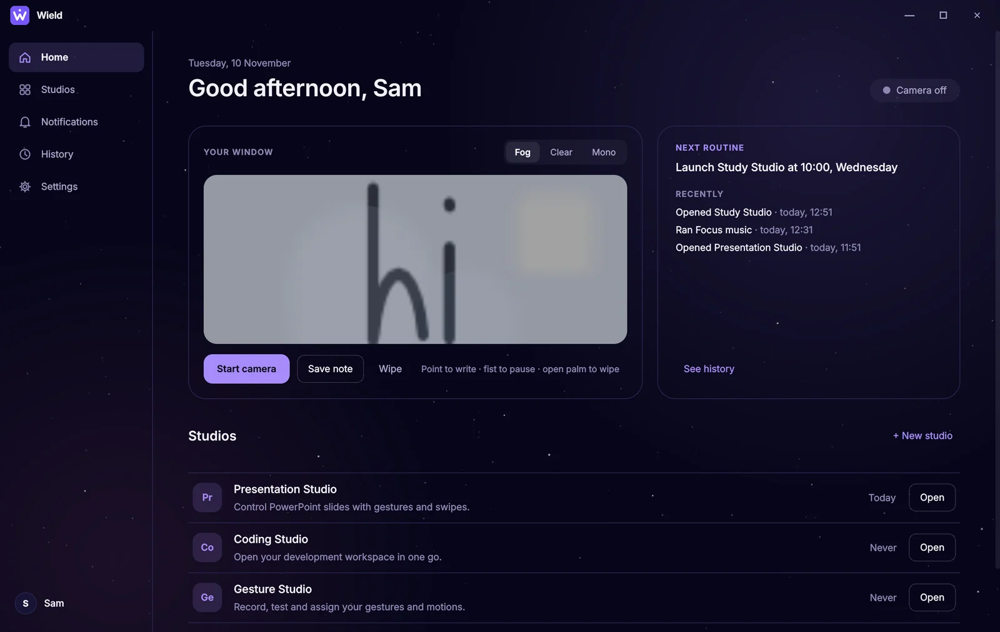
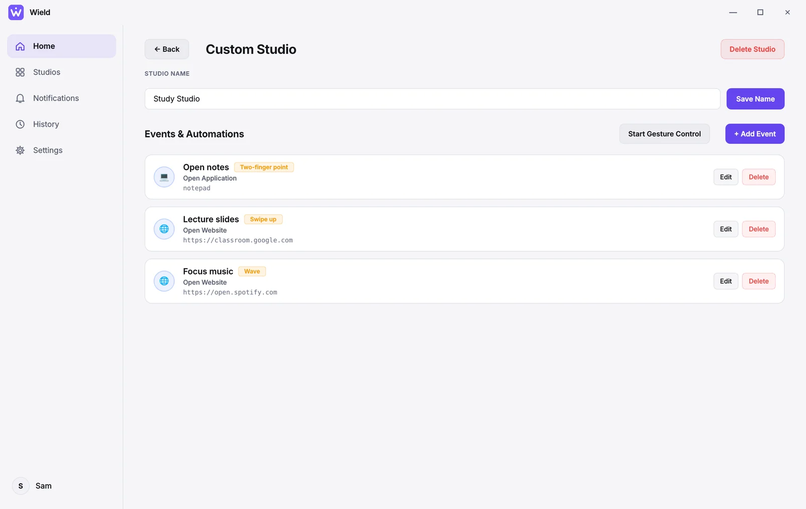
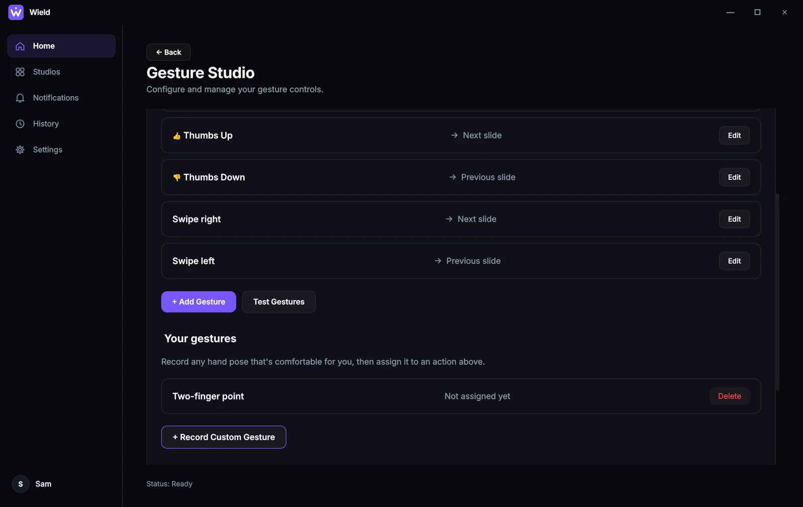
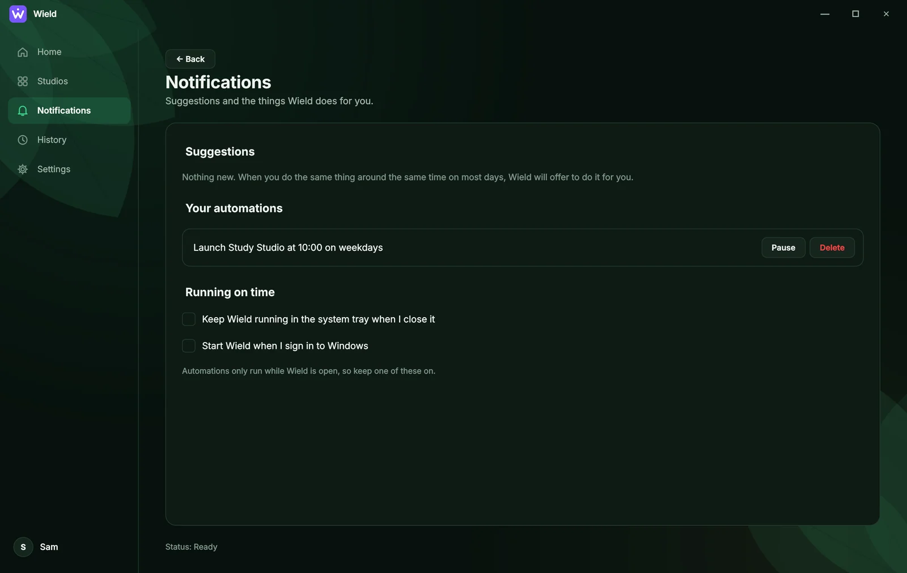
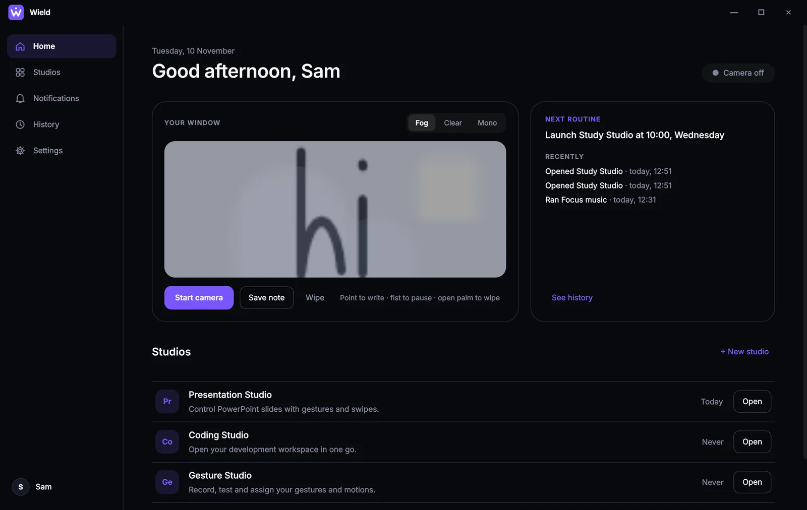
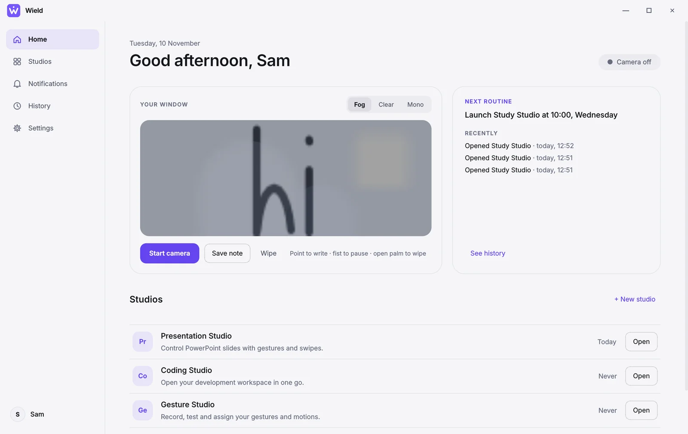
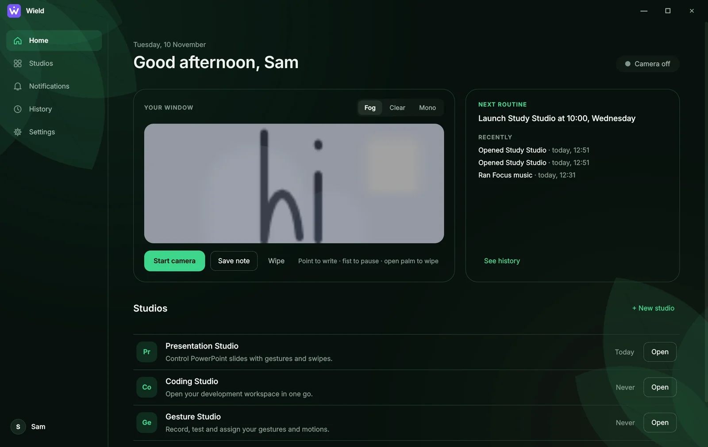

Build a studio for anything
A Study Studio that opens your notes with a two-finger point, your lecture slides with a swipe up, and focus music with a wave.
Turn on gesture control, and every event listens for its gesture.
Wield turns your webcam into a remote control. Make a gesture, swipe the air or teach it a move of your own, and Wield opens your apps, changes your slides and runs your routines.
Windows 10 and 11 · needs a webcam · about 190 MB · open source

No special hardware and no fixed hand shapes. Wield learns the poses and movements that are comfortable for you.
Thumbs up and open palm work out of the box. Record any other pose you can hold, in three short takes.
Swipe left or right to change slides. Teach it a wave, a circle or any movement you like.
Group what you need for a task. Each gesture can open an app, a file or a website, press a shortcut or control PowerPoint.
Open the same studio at 10:00 most days, and Wield offers to do it for you. It always asks first.
Adjust how strict matching is, require a pose to be held, or use an activation gesture so ordinary hand movement never triggers anything.
Your camera is processed on your computer. Nothing is recorded or uploaded, and everything Wield learns stays in your own folder.
A Study Studio that opens your notes with a two-finger point, your lecture slides with a swipe up, and focus music with a wave.
Turn on gesture control, and every event listens for its gesture.

See every gesture and what it does, record your own, and test them live before you rely on them.

Wield notices what you do around the same time each day and suggests automating it. Say not now and it waits in Notifications.
Turn it into an automation, and Wield runs it for you on time.

Pick Dark, Light, Jungle or Galaxy. Write a note on the foggy window with your finger, and it greets you next time.
Every theme meets accessibility guidelines for contrast.



A normal webcam, a hand-tracking model and a few careful rules. Everything runs on your computer.
Every frame, Wield finds your hand and 21 points on it: the wrist, knuckles and fingertips.
Google MediaPipe hand landmarks, about 10 to 24 times a second.
Your hand's shape is compared with the poses you recorded, wherever your hand is and whichever hand you use. It only counts if one pose is clearly the closest.
Normalised landmarks, nearest match with a distance limit and an ambiguity margin.
When your hand moves, Wield traces the path and compares its shape with the moves it knows, however big or fast you draw it.
Path resampling and dynamic time warping. Swipes are recognised by direction and straightness.
No installer and no Python. Just unzip and run.
Wield-windows.zip (about 190 MB) from the latest release.
Right-click the zip and choose Extract All. Keep the Wield folder anywhere you like.
Open the folder and double-click Wield.exe. A short welcome checks your camera and shows you a first gesture.
No. Any webcam works, including the one built into most laptops. Good lighting helps.
No. Video is processed frame by frame on your computer and thrown away. Wield saves only what you choose to keep: the gestures you record (as hand-point positions, not pictures), your studios, settings, and the writing on your foggy window.
That's what Wield is for. Record any pose or movement you can comfortably make. In Settings you can make matching more forgiving, require a short hold, or add an activation gesture.
The download is for Windows 10 and 11. The code runs from source on macOS and Linux too, but PowerPoint control and start-at-sign-in are Windows only.
Yes. Wield is free and open source under the MIT license.
Open Settings, then About, then Report a problem. It opens a GitHub issue with your version filled in. Attaching the log from the same page helps a lot.
Download Wield, wave hello, and see what your hands can do.